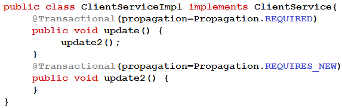
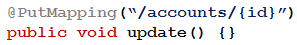
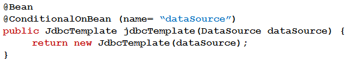

1. If a class is annotated with @Component, what should be done to have Spring automatically detect the annotated class and load it as a bean? (Choose the best answer.)
A. Ensure a valid bean name in the @Component annotation is specified.
B. Ensure a valid @ComponentScan annotation in the Java configuration is specified.
C. Ensure a valid @Scope for the class is specified.
D. Ensure a valid @Bean for the class is specified.
COMMUNITY DISCUSSION
Selected Answer: B
Valid bean name is provided for you using the name of the class, @ComponentScan on a @Configuration marked class is needed.
2. Which two options will inject the value of the daily.limit system property? (Choose two.)
A. @Value(“#{daily.limit}”)
B. @Value(“$(systemProperties.daily.limit)”)
C. @Value(“$(daily.limit)”)
D. @Value(“#{systemProperties[‘daily.limit’]}”)
E. @Value(“#{systemProperties.daily.limit}”)
COMMUNITY DISCUSSION
Selected Answer: AE
A. @Value(“#{daily.limit}”)
E. @Value(“#{systemProperties.daily.limit}”) because we are talking about SystemProperty
3. Which two options are REST principles? (Choose two.)
A. RESTful applications use a stateless architecture.
B. RESTful application use HTTP headers and status codes as a contract with the clients.
C. RESTful applications cannot use caching.
D. RESTful application servers keep track of the client state.
E. RESTful applications favor tight coupling between the clients and the servers.
4. Which option is true about use of mocks in a Spring Boot web slice test? (Choose the best answer.)
A. Mocking a Spring Bean requires annotating it with @MockBean annotation.
B. If a Spring Bean already exists in the web slice test spring context, it cannot be mocked.
C. Mocks cannot be used in a Spring Boot web slice test.
D. Mocking a Spring Bean requires annotating it with @Mock annotation.
5. Which two statements are true regarding Spring Security? (Choose two.)
A. Access control can be configured at the method level.
B. A special Java Authentication and Authorization Service (JAAS) policy file needs to be configured.
C. Authentication data can be accessed using a variety of different mechanisms, including databases and LDAP.
D. In the authorization configuration, the usage of permitAll () allows bypassing Spring security completely.
E. It provides a strict implementation of the Java EE Security specification.
COMMUNITY DISCUSSION
Selected Answer: AC
permitAll() does not bypass security entirely, it just allows access to the specified matcher, but other security related filters still run. e.g. cors, cqrs ...
6. Which two statements are true regarding a Spring Boot-based Spring MVC application? (Choose two.)
A. The default embedded servlet container can be replaced with Undertow.
B. Jetty is the default servlet container.
C. Spring Boot starts up an embedded servlet container by default.
D. The default port of the embedded servlet container is 8088.
E. Spring MVC starts up an in-memory database by default.
COMMUNITY DISCUSSION
Selected Answer: AC
Default embedded servlet container is Tomcat. Jetty and Undertow can be used instead of it.
7. Which two statements are true regarding Spring and Spring Boot Testing? (Choose two.)
A. EasyMock is supported out of the box.
B. @SpringBootTest or @SpringJUnitConfig can be used for creating an ApplicationContext.
C. Mockito spy is not supported in Spring Boot testing by default.
D. The spring-test dependency provides annotations such as @Mock and @MockBean.
E. Integration and slice testing are both supported.
COMMUNITY DISCUSSION
Selected Answer: BE
D - it is not chosen because @Mock is commonly associated with other mocking frameworks like Mockito.
B and D
mockito is supported
8. Assume that the application is using Spring transaction management which uses Spring AOP internally.
Choose the statement that describes what is happening when the update1 method is called? (Choose the best answer.)

A. There are 2 transactions because REQUIRES_NEW always runs in a new transaction.
B. An exception is thrown as another transaction cannot be started within an existing transaction.
C. There is only one transaction because REQUIRES_NEW will use an active transaction if one already exists.
D. There is only one transaction initiated by update1() because the call to update2() does not go through the proxy.
COMMUNITY DISCUSSION
Selected Answer: D
The option D is correct due to this article, where this case resolved -
Option B is incorrect because an exception is not thrown when using REQUIRES_NEW propagation.
Option C is incorrect because REQUIRES_NEW will always create a new transaction even if an active transaction is present.
Option D is also incorrect because the call to update2() does go through the proxy and the transactional behavior will be applied.
9. Which two statements are true concerning constructor injection? (Choose two.)
A. If there is only one constructor the @Autowired annotation is not required.
B. Constructor injection only allows one value to be injected.
C. Constructor injection is preferred over field injection to support unit testing.
D. Construction injection can be used with multiple constructors without @Autowired annotation.
E. Field injection is preferred over constructor injection from a unit testing standpoint.
COMMUNITY DISCUSSION
Selected Answer: AC
Contructor injection is preferred because it allows for easier unit testing. If only one constructor is available it will be used to inject dependencies without the need of @Autowired annotation.
As of Spring Framework 4.3, an @Autowired annotation on such a constructor is no longer necessary if the target bean only defines one constructor to begin with.
Answer A and C
10. Given an ApplicationContext containing three bean definitions of type Foo with bean ids foo1, foo2, and foo3, which three @Autowired scenarios are valid and will allow the ApplicationContext to initialize successfully? (Choose three.)
A. @Autowired public void setFoo (Foo foo) {…}
B. @Autowired @Qualifier ("foo3") Foo foo;
C. @Autowired public void setFoo (@Qualifier ("foo1") Foo foo) {…}
D. @Autowired private Foo foo;
E. @Autowired private Foo foo2;
F. @Autowired public void setFoo(Foo foo2) {…}
COMMUNITY DISCUSSION
Selected Answer: BCE
@Qualifier annotation is used to specify a bean id when injecting. @Qualifier can be used both on fields and method parameters. If it is a field injection the name of the field can qualify the bean.
The very first injection was foo1 setter injection (@5293), after that foo3 and foo2 (the upper definition in class gets injected first, so in my code, I had defined the order of injections as follows: B, E, C, but setter injection (C) happens first, then B and E). There is no problem with the same "foo" variable name of two different beans in one class (C and B injections), as the variable scopes are different, and in practice, in case C the foo1 bean can be used and processed immediately (first) or reassigned to another variable name, therefore with this injection configuration the injection of all three beans foo1, foo2, foo3 is possible.
Explanation of my previous comment/answer:
Spring injection happens first by type definition, but the type is the same in all answers, so it looks for @Primary annotation, which is not found, then for @Qualifier annotations, and the last lookup, if @Qualifier was not found, is the resolution by bean name. If not successful, after all, the exception is thrown.
In my demo app, when I run B,E,C, my break point first stops at setter method setFoo where I can see in debug already injected beans:
Foo@5293 - foo1 - C
Foo@5297 - foo3 - B
Foo@5298 - foo2 - E
A and D is not correct at all. I defined 3 beans definitions with those ids and in my service class used setter injection or simple Foo foo definition of Autowired-> gives error:
Could not autowire. There is more than one bean of 'Foo' type.
But not works all 4 together, C and F say the setFoo method name is already defined.
So B, E, F will work -> but will inject only 2 beans, foo3 and foo2 -> foo2 in 2 places, but is at the end the same bean defined once through setter injection and second time through autowired filed injection.
Or B, E, C will work -> will inject foo1, foo2, foo3
So the only correct answer to inject beans foo1,foo2,foo3 with working program is B, E, C.
11. Which dependency enables an automatic restart of the application as code is changed during development of a Spring boot configuration on a web application? (Choose the best answer.)
A. spring-boot-devtools
B. spring-boot-initializr
C. spring-boot-starter-devtools
D. spring-boot-restart
12. Spring puts each bean instance in a scope. What is the default scope? (Choose the best answer.)
A. prototype
B. singleton
C. request
D. session
13. Which option is a valid way to retrieve the account id? (Choose the best answer.)

A. Add @PathVariable(“id”) String accountId argument to the update() handler method.
B. Add @PathVariable long accountId argument to the update() handler method.
C. Add @RequestParam long accountId argument to the update() handler method.
D. Add @RequestParam(“id”) String accountId argument to the update() handler method.
14. Which strategy is correct for configuring Spring Security to intercept particular URLs? (Choose the best answer.)
A. The URLs can be specified via configuration (using authorizeRequests () and request matchers), with the most specific rule first and the least specific last.
B. Spring Security can obtain URLs from Spring MVC controllers, the Spring Security configuration just needs a reference to the controller to be protected.
C. The URLs are specified in a special properties file, used by Spring Security.
D. The URLs can be specified via configuration (using authorizeRequests () and request matchers), with the least specific rule first and the most specific last.
15. In which three ways are Security filters used in Spring Security? (Choose three.)
A. To provide risk governance.
B. To drive authentication.
C. To manage application users.
D. To provide a logout capability.
E. To enforce authorization (access control).
F. To encrypt data.
16. The above code shows a conditional @Bean method for the creation of a JdbcTemplate bean.
Which two statements correctly describe the code behavior? (Choose two.)

A. @ConditionalOnBean(name= “dataSource”) should be replaced with @ConditionalOnBean (DataSource.class) for greater flexibility.
B. @ConditionalOnBean(name= “dataSource”) should be replaced with @ConditionalOnMissingBean (DataSource.class) for greater flexibility.
C. The @Bean annotation should be removed.
D. A JdbcTemplate bean will be created when the DataSource class is in the classpath but there is no DataSource bean.
E. A JdbcTemplate bean will be created when a bean named dataSource has already been created.
COMMUNITY DISCUSSION
Selected Answer: AE
Option D is incorrect because the @ConditionalOnBean annotation requires that a bean with the specified name or class already exists in the application context for the JdbcTemplate bean to be created.
17. What is a Spring Boot starter dependency? (Choose the best answer.)
A. A setting for specifying which code you want Spring Boot to generate for you.
B. A specific POM which you must build to control Spring Boot’s opinionated runtime.
C. A pre-existing model project you can download and use as the basis of your project.
D. An easy way to include multiple, coordinated dependencies related to a specific technology, like web or JDBC.
18. Which two are required to use transactions in Spring? (Choose two.)
A. Add @EnableTransactionManagement to a Java configuration class.
B. Annotate a class, an interface, or individual methods requiring a transaction with the @Transactional annotation.
C. A class must be annotated with @Service and @Transaction.
D. A class requiring a transaction must implement the TransactionInterceptor interface.
E. Write a Spring AOP advice to implement transactional behavior.
19. Which two statements are true regarding the RestTemplate class? (Choose two.)
A. It supports asynchronous non-blocking model.
B. It automatically supports sending and receiving Java objects.
C. It provides convenience methods for writing REST clients.
D. It provides convenience methods for writing REST services.
E. Sending an HTTP request with a custom header is not possible when using RestTemplate.
COMMUNITY DISCUSSION
Selected Answer: BC
RestTemplate supports sending custom headers using exchange method with HttpEntity object.
20. Which statement is true? (Choose the best answer.)
A. @ActiveProfiles is a class-level annotation that is used to instruct the Spring TestContext Framework to record all application events that are published in the ApplicationContext during the execution of a single test.
B. @ActiveProfiles is a class-level annotation that you can use to configure how the Spring TestContext Framework is bootstrapped.
C. @ActiveProfiles is a class-level annotation that you can use to configure the locations of properties files and inlined properties to be added to the set of PropertySources in the Environment for an ApplicationContext loaded for an integration test.
D. @ActiveProfiles is a class-level annotation that is used to declare which bean definition profiles should be active when loaded an ApplicationContext for an integration test.
21. Which two statements are true about REST? (Choose two.)
A. REST is a Protocol.
B. REST is Stateful.
C. REST is Reliable.
D. REST is Interoperable.
E. REST is Relative.
COMMUNITY DISCUSSION
Selected Answer: CD
REST is a API Architectural Style not a Protocol
22. Spring Boot will find and load property files in which of the following? (Choose the best answer.)
A. A *.properties file matching the name of the class annotated with @SpringBootApplication.
B. config.properties or config.yml, usually located in the classpath root.
C. application.properties or application.yml, usually located in the classpath root.
D. env.properties or env.yml, usually located in the classpath root.
23. Which three dependencies are provided by the spring-boot-starter-test? (Choose three.)
If you use the spring-boot-starter-test ‘Starter’ (in the test scope), you will find the following provided libraries:
JUnit — The de-facto standard for unit testing Java applications.
Spring Test & Spring Boot Test — Utilities and integration test support for Spring Boot applications.
AssertJ — A fluent assertion library.
Hamcrest — A library of matcher objects (also known as constraints or predicates).
Mockito — A Java mocking framework.
JSONassert — An assertion library for JSON.
JsonPath — XPath for JSON.
24. Which two statements are correct regarding Spring Boot auto-configuration customization? (Choose two.)
A. Use the @AutoConfigureAfter or @AutoConfigureBefore annotations to apply configuration in a specific order.
B. Disable specific auto-configuration classes by using the exclude attribute on the @EnableAutoConfiguation annotation.
C. Provide customized auto-configuration by subclassing the provided Spring Boot auto-configuration classes.
D. Enable component scanning within auto-configuration classes to find necessary components.
E. Control the order of auto-configuration classes applied with @AutoConfigureOrder.
COMMUNITY DISCUSSION
Selected Answer: BC
A. The @AutoConfigureAfter, @AutoConfigureBefore, and @AutoConfigureOrder annotations are used to control the order in which auto-configuration classes are applied, not to apply configuration in a specific order
25. Which two statements about the @Autowired annotation are true? (Choose two.)
A. @Autowired fields are injected after any config methods are invoked.
B. Multiple arguments can be injected into a single method using @Autowired.
C. By default, if a dependency cannot be satisfied with @Autowired, Spring throws a RuntimeException.
D. If @Autowired is used on a class, field injection is automatically performed for all dependencies.
E. @Autowired can be used to inject references into BeanPostProcessor and BeanFactoryPostProcessor.
COMMUNITY DISCUSSION
Selected Answer: AB
A and B, per Autowired documentation.
Autowired Fields
Fields are injected right after construction of a bean, before any config methods are invoked. Such a config field does not have to be public.
Autowired Methods
Config methods may have an arbitrary name and any number of arguments; each of those arguments will be autowired with a matching bean in the Spring container. Bean property setter methods are effectively just a special case of such a general config method. Such config methods do not have to be public.
Not sure about A, because @Autowired fields are injected before any config methods (@Bean, @Component, @Configuration, etc..) are invoked.
27. Which two statements are true concerning the BeanPostProcessor Extension point? (Choose two.)
A. BeanPostProcessors are called before the dependencies have been injected.
B. Custom BeanPostProcessrs can be implemented for Spring applications.
C. BeanPostProcessors are called before the BeanFactoryPostProcessors.
D. BeanPostProcessors are called during the initialization phase of a bean life cycle.
E. BeanPostProcessors cannot be ordered in a Spring Boot application.
28. Which two statements are true about @Controller annotated classes? (Choose two.)
A. The @Controller annotated classes can only render views.
B. The classes are eligible for handling requests in Spring MVC.
C. The classes must be annotated together with @EnableMvcMappings to be discovered via component scanning.
D. @Controller is interchangeable with @RestController with no extra code changes for the methods inside the class.
E. The @Controller annotation is a stereotype annotation like @Component.
29. Which two statements are correct regarding Spring Boot 2.x Actuator Metrics? (Choose two.)
A. An external monitoring system must be used with Actuator.
B. The metrics endpoint /actuator/metrics is exposed over HTTP by default.
C. Timer measures both the number of timed events and the total time of all events timed.
D. Custom metrics can be measured using Meter primitives such as Counter, Gauge, Timer, and Distribution Summary.
E. A metric must be created with one or more tags.
30. Which two statements describe Spring JdbcTemplate? (Choose two.)
A. All JdbcTemplate methods throw SQLException which you are required to handle.
B. The JdbcTemplate provides the ability to work with result sets.
C. The JdbcTemplate can only perform update but not insert to the database.
D. The JdbcTemplate provides methods for query execution.
E. The JdbcTemplate generates SQL statements.
31. Which two statements are true regarding @DataJpaTest? (Choose two.)
A. TestEntityManager provides all methods that are provided by EntityManager and more.
B. If an embedded database is on classpath, it will be used to configure a DataSource by default.
C. It can be used for testing both JPA components an NoSQL components.
D. It auto-configures a TestEntityManager bean.
E. It can be used for testing JdbcTemplate.
32. Which three statements are advantages of using Spring's Dependency Injection? (Choose three.)
A. Dependency injection can make code easier to trace because it couples behavior with construction.
B. Dependency injection reduces the start-up time of an application.
C. Dependencies between application components can be managed external to the components.
D. Configuration can be externalized and centralized in a small set of files.
E. Dependency injection creates tight coupling between components.
F. Dependency injection facilitates loose coupling between components.
33. Which three types can be used as @Controller method arguments? (Choose three.)
A. Locale.
B. Principal.
C. Language.
D. Session.
E. Request.
F. HttpSession.
COMMUNITY DISCUSSION
Selected Answer: ABF
Http Session, Locale and Principal
34. Which two options are valid optional attributes for Spring's @Transactional annotation? (Choose two.)
A. isolation.
B. writeOnly.
C. nestedTransaction.
D. readWrite.
E. propagation.
35. Which statement describes the propagation behavior of Propagation.REQUIRES_NEW annotation? (Choose the best answer.)
A. Starts a new transaction but throws an exception if an active transaction already exists.
B. Joins a transaction if one already exists; throws an exception if an active transaction does not exist.
C. Starts a new transaction; if an active transaction already exists, it is suspended.
D. Runs in a nested transaction if an active transaction exists; throw an exception if an active transaction does not exist.
36. Which two statements are true about Spring Boot and Spring Data JPA? (Choose two.)
A. @EntityScan and spring.jpa.* properties can be used to customize Spring Data JPA.
B. Any kind of Hibernate property can be passed to Spring Data JPA like spring.jpa.properties.xxx.
C. Spring Data JPA is the only implementation of relational databases.
D. Scanning of JPA Entities can not be customized, the whole classpath is scanned.
E. Embedded Databases(H2, HSQLDB, Derby) are not re-created during the startup.
37. What two options are auto-configured Spring Boot Actuator HealthIndicators? (Choose two.)
A. DataSourceHealthIndicator
B. GoogleCloudDataStoreHealthIndicator
C. DynamoDBHealthIndicator
D. RabbitHealthIndicator
E. OktaHealthIndicator
38. Which two statements are correct regarding Spring Boot auto-configuration? (Choose two.)
A. Auto-configuration uses @Conditional annotations to constrain when it should apply.
B. Auto-configuration could apply when a bean is missing but not when a bean is present.
C. Auto-configuration is applied by processing candidates listed in META-INF/spring.factories.
D. Auto-configuration could apply when a bean is present but not when a bean is missing.
E. Auto-configuration is applied before user-defined beans have been registered.
39. Which two statements are true regarding storing user details in Spring Security? (Choose two.)
A. With custom UserDetailsService defined in the ApplicationContext, Spring Boot still creates the default user.
B. Passwords must be hashed and the default hashing algorithm is MD5.
C. User details can be stored in custom storage and retrieve them by implementing the UserDetailService interface.
D. User details can be stored in a database, in LDAP, or in-memory.
E. The user details includes username and password but not authorities.
40. Which two statements about pointcut expressions are true? (Choose two.)
A. A pointcut expression cannot specify the type parameters.
B. A pointcut expression with throw an exception if no methods are matched.
C. A pointcut expression cannot have a wildcard for a method name.
D. A pointcut expression can include operators such as the following: && (and), || (or), ! (not).
E. A pointcut expression can be used to select join points which have been annotated with specific annotation.
41. Which following statements are true about Spring Data? (Choose two.)
A. Spring Data implementation exist for many data storage types, such as MongoDB, Neo4j, and Redis.
B. Spring Data works by applying the JPA annotations to data stores such as MongoDB, Neo4j, and Redis.
C. Spring Data can greatly reduce the amount of "boilerplate" code typically needed for data access.
D. Spring Data is specifically designed for JPA, JDBC, and relational database access only.
E. Spring Data cannot be used together with Spring MVC.
42. Which two annotations indicate that the transaction for a transactional test method should be committed after the test method has completed? (Choose two.)
A. @SqlMergeMode(false)
B. @Rollback(false)
C. @Commit
D. @Sql(alwaysCommit=true)
E. @Transactional(commit=true)
43. Which statement describes the @AfterReturning advice type? (Choose the best answer.)
A. The advice is invoked only if the method returns successfully but not if it throws an exception.
B. The @AfterReturning advice allows behavior to be added after a method returns even if it throws an exception.
C. The advice has complete control over the method invocation; it could even prevent the method from being called at all.
D. Typically used to prevent any exception, thrown by the advised method, from propagating up the call-stack.
44. Which two statements are correct regarding the Actuator info endpoint? (Choose two.)
A. It provides configuration options through which only an authenticated user can display application information.
B. It is not enabled by default.
C. It can be used to display arbitrary application information.
D. It can be used to change a property value on a running application.
E. Typically it is used to display build or source control information.
45. Which two statements are correct regarding the HelloAutoConfig auto-configuration class when it is specified in the META-INF/spring.factories file? (Choose two.)
A. A HelloService bean will be created from the helloService() method even if the HelloService.class is not in the classpath.
B. A HelloService bean will be created from the helloService() method only when there is no other HelloService bean in the ApplicationContext.
C. This auto-configuration class is used only when the HelloService.class is not on the classpath.
D. This auto-configuration class is used only when the HelloService.class is on the classpath.
E. A HelloService bean will be created from the helloService() method and will replace existing a HelloService bean in the ApplicationContext.
46. Which two statements are correct when @SpringBootApplication is annotated on a class? (Choose two.)
A. It causes Spring Boot to enable auto-configuration by default.
B. Component scanning will start from the package of the class.
C. All other annotations on the class will be ignored.
D. Methods in the class annotated with @Bean will be ignored.
E. A separate ApplicationContext will be created for each class annotated with @SpringBootApplication.
47. Which statement about @TestPropertySource annotation is true? (Choose the best answer.)
A. Java system properties have higher precedence than the properties loaded from @TestPropertySource.
B. Properties defined @PropertySource are not loaded if @TestPropertySource is used.
C. @TestPropertySource annotation loads a properties file relative to the root of the project by default.
D. Inlined properties defined in @TestPropertySource can be used to override properties defined in property files.